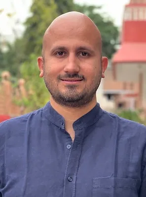
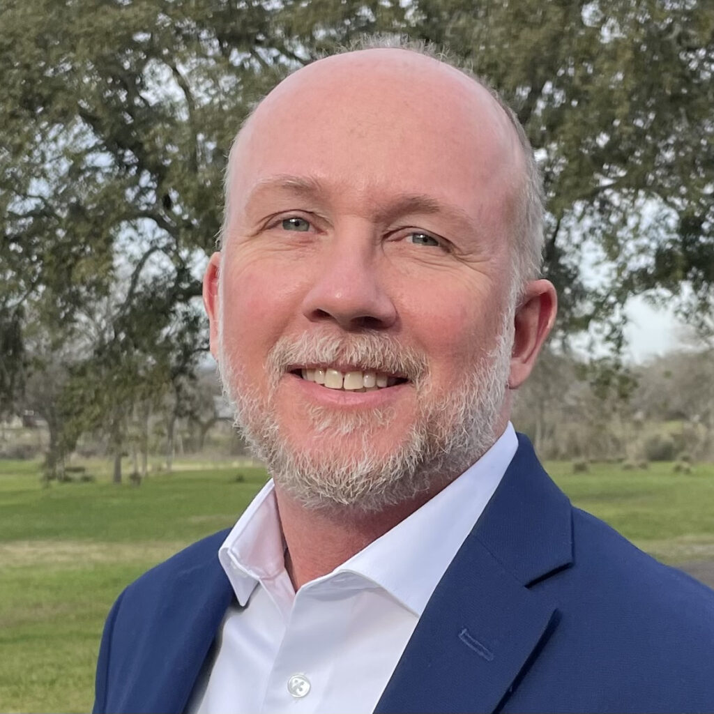
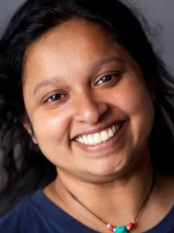
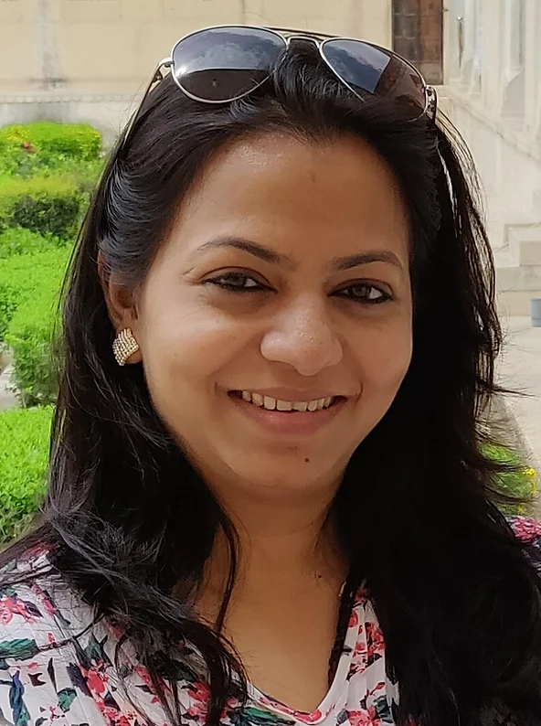
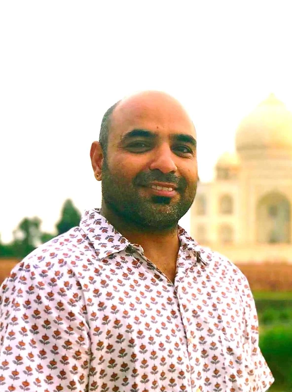
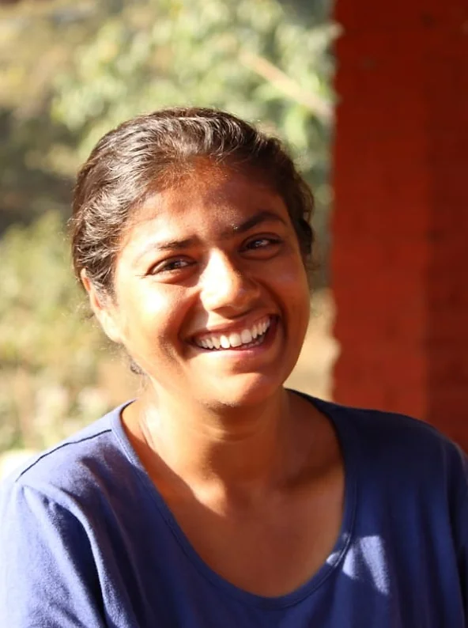
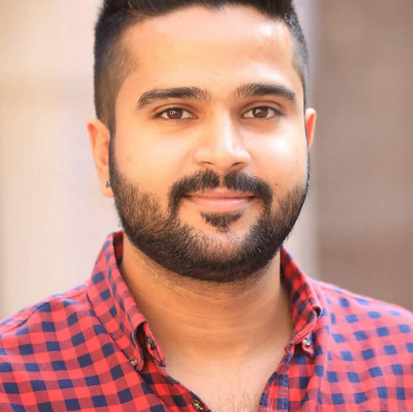
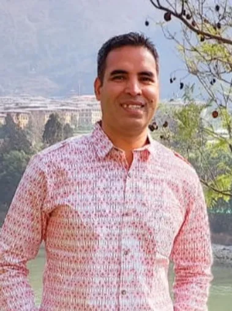

The soul of Experiential Pathways. We are driven by a deep belief that experiential learning, Student Travel Programs through travel is really important to evolve travellers into global leaders. We strive for sustainable change to both our students perspectives, and to the communities we work and with our partners. Get to know a few of us below, and don’t be shy in reaching out to say hello!

Founder & Director

co-founder and Executive Director of Cornerstone Safety Group

CEO

Bhutan Head - Women empowerment specialist

Groups Manager

Program Leader South Asia

Program Leader South Asia
Program Leader South Asia
Program Leader South Asia
Program Leader South Asia

Head logistics - Bhutan & Sri Lanka
Social Media Manager
Adventure Program Specialist